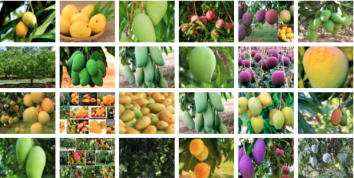

ഇന്ത്യയിലെ പ്രധാന ഫലവൃക്ഷമാണ് മാവ്. നാരക വർഗ്ഗങ്ങൾ, ആപ്പിൾ എന്നിവയെക്കാൾ ജനപ്രിയമാണ് മാമ്പഴം. ഉഷ്ണമേഖലാ പ്രദേശങ്ങളിലാണ് മാവ് കാണപ്പെടുന്നത്. തെക്കൻ ഏഷ്യയാണ് മാവിന്റെ ജന്മദേശമായി കണക്കാക്കുന്നത്. പാക്കിസ്താൻ, മ്യാന്മാർ, ചൈന, ശ്രീലങ്ക എന്നിവിടങ്ങങ്ങളിലും മാവ് കൃഷിചെയ്തുവരുന്നു.നൂറ് കണക്കിന് ഇനങ്ങൾ അതാത് പ്രദേശങ്ങൾക്കിണങ്ങിയ തരത്തിൽ കൃഷി ചെയ്തുകാണുന്നു. ഇന്ത്യയിൽ ഉടനീളവും ആന്ധ്രാ പ്രദേശ്, പശ്ചിമ ബംഗാൾ, കേരളം, കർണ്ണാടക, മഹരാഷ്ട്ര, തമിഴ്നാട്, ഉത്തരാഞ്ചൽ, ഉത്തർപ്രദേശ് എന്നിവിടങ്ങളിൽ വൻതോതിൽ മാവ് കൃഷി ചെയ്തുവരുന്നു. ഒരേയിനം മാവുകൾ പലപ്രദേശങ്ങളിൽ പലപേരുകളിൽ അറിയപ്പെടുന്നു.
| Scientific name | Mangifera indica |
| Higher classification | Mangifera |
| Rank | Species |
| Family | Anacardiaceae |
| Kingdom | Plantae |
| Order | Sapindales |